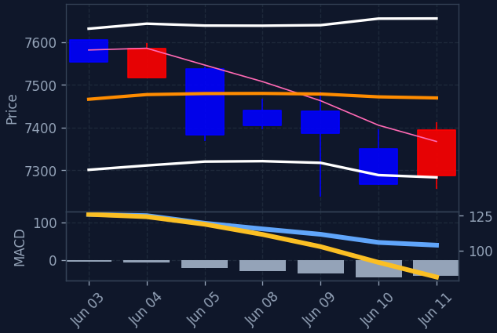
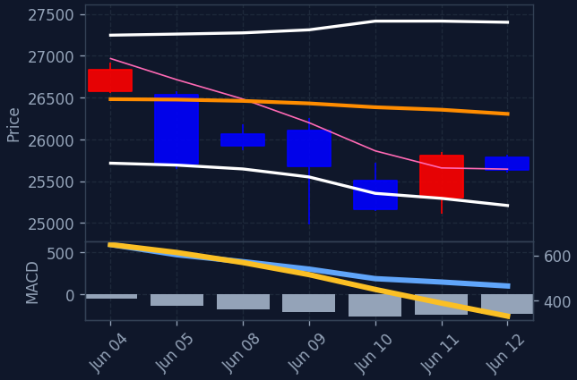
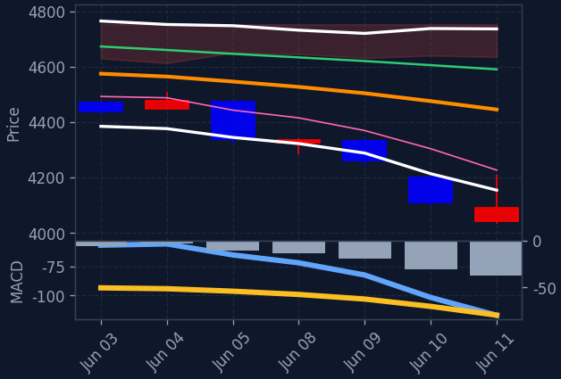
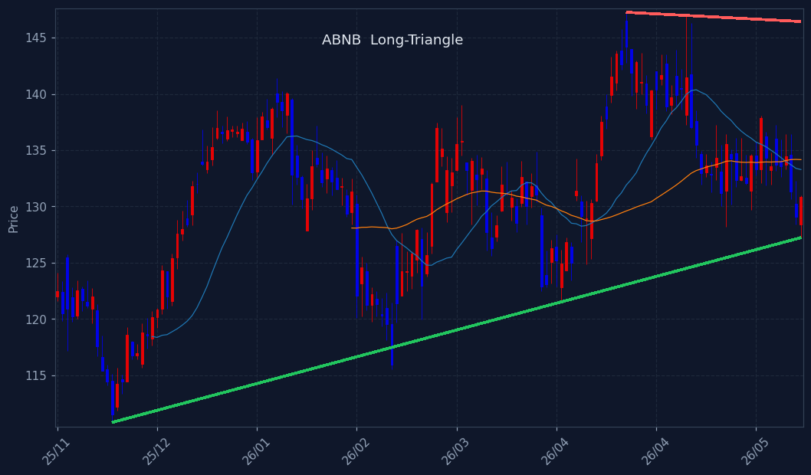
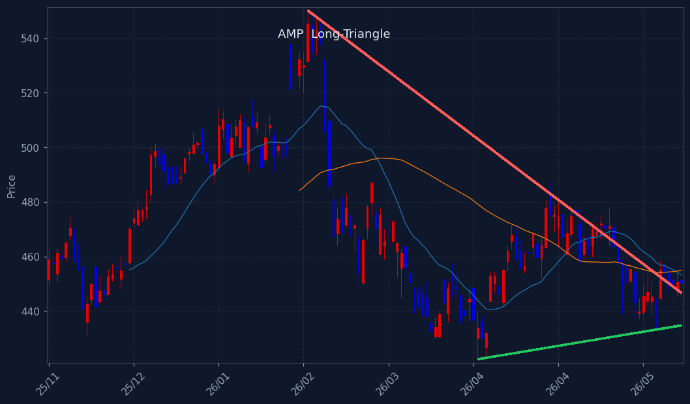
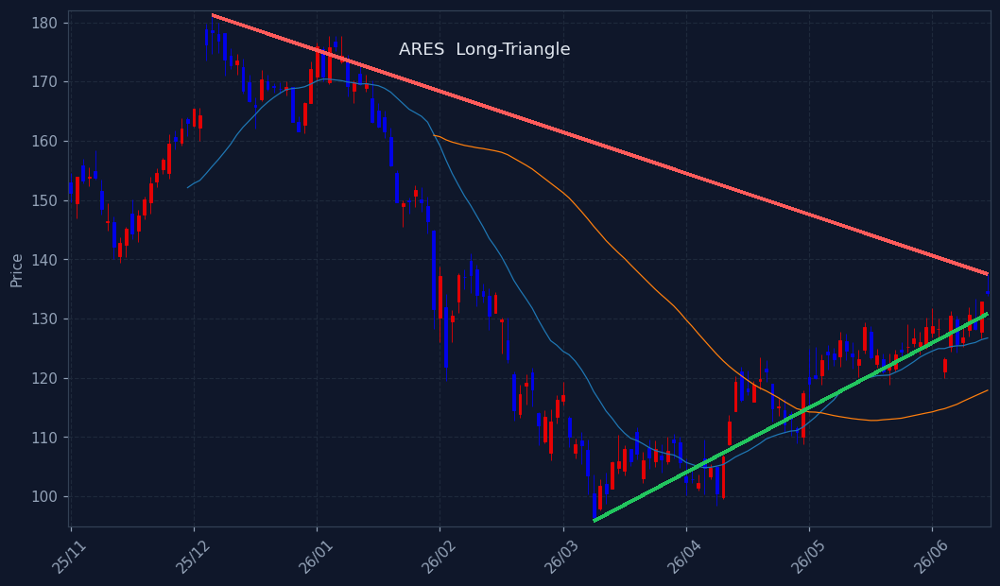
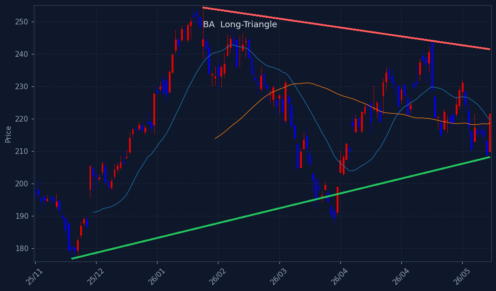
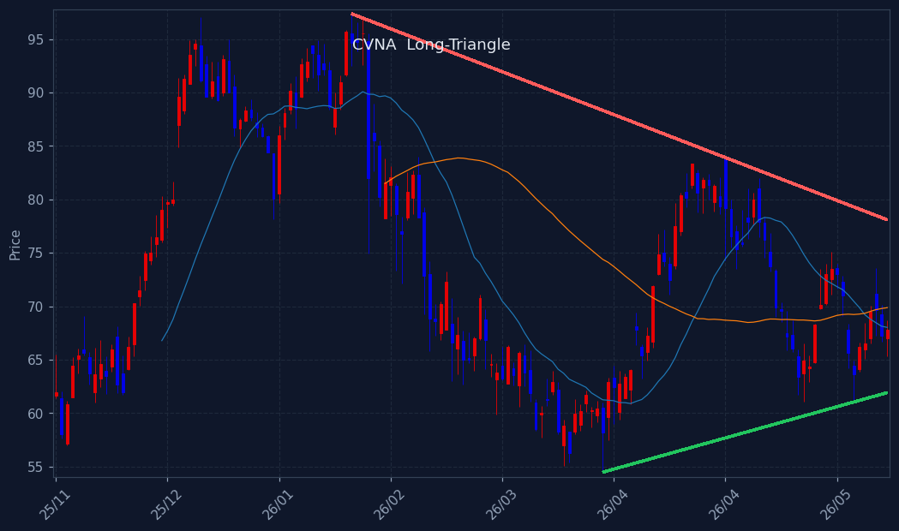

📊 미국 애프터장 리뷰 (한국 오후)
30 / 100 — 공포
🌎미국 증시 마감




미국 증시는 전반적으로 강세를 보이며 주요 지수들이 큰 폭으로 상승했습니다. 특히 반도체 섹터가 7.91% 급등하며 시장을 주도했으며, 기술주 전반의 강세와 함께 경기소비재, 2차전지 등도 좋은 흐름을 보였습니다. 지정학적 긴장 완화 기대감이 투자 심리를 개선시킨 것으로 분석됩니다.
이란과의 관계 개선 가능성에 대한 트럼프 대통령의 발언이 시장 전반의 투자 심리를 크게 개선시키며 증시 상승을 견인했습니다. 특히 반도체 섹터는 SOXL이 23.99% 급등하는 등 강력한 상승세를 보였으며, AMD, 엔비디아 등 주요 종목들도 동반 강세를 나타냈습니다. 반면 에너지 섹터는 1.94% 하락하며 상대적으로 부진한 모습을 보였습니다.
오늘 미국 시장에서는 반도체 섹터가 필라델피아반도체 지수 7.91% 상승을 필두로 가장 강력한 상승세를 기록했습니다. SOXL의 23.99% 급등은 시장의 높은 관심을 반영하며, AMD, 엔비디아 등 주요 반도체 기업들의 주가도 크게 올랐습니다. 2차전지/리튬 섹터 역시 5.49% 상승하며 강세를 이어갔습니다. 이러한 미국 반도체 섹터의 강세는 한국 반도체 관련주에도 긍정적인 영향을 줄 것으로 예상됩니다.
🔥강세 섹터 (상승률 상위)
- 반도체 +8.39%
- 2차전지/리튬 +5.49%
- 태양광/신재생 +5.31%
- 방산/우주항공 +4.97%
🔻약세 섹터 (하락률 상위)
- 에너지 -1.94%
- 금융 +0.75%
- 헬스케어/바이오 +0.81%
- 경기소비재 +2.48%
📈섹터별 대장주 (섹터 · 1주일 상승률)
-
반도체
마이크론
MU·나스닥 · 장마감 $995.87 (+11.66%) (애프터장 +0.28%) 1주일 +-0.0% 🇰🇷 한국인 순매수 전일 +1,309억 · 최근5일 +555억
- 2차전지/리튬 ALB ALB·NYSE · 장마감 $159.06 (+8.04%) (애프터장 +0.21%) 1주일 -4.0%
- 태양광/신재생 퍼스트 솔라 FSLR·나스닥 · 장마감 $271.17 (+8.79%) (애프터장 +0.36%) 1주일 -13.9%
- 방산/우주항공 GE에어로스페이스 GE·NYSE · 장마감 $332.76 (+4.41%) (애프터장 -0.11%) 1주일 +1.6%
- 에너지 엑슨모빌 XOM·NYSE · 장마감 $146.60 (-2.67%) (애프터장 +0.05%) 1주일 -3.6%
- 금융 JP모건 JPM·NYSE · 장마감 $313.49 (+1.41%) (애프터장 +0.00%) 1주일 +0.8%
- 헬스케어/바이오 일라이릴리 LLY·NYSE · 장마감 $1,160.95 (+2.16%) (애프터장 -0.37%) 1주일 +3.2%
-
경기소비재
아마존
AMZN·나스닥 · 장마감 $241.51 (+1.47%) (애프터장 +0.33%) 1주일 -4.8% 🔻 한국인 순매도 최근5일 1,000억(자금유출)
- 반도체 3X 반도체 3X(SOXL) SOXL · 장마감 $223.99 (+23.99%) (애프터장 +2.15%) 1주일 -14.7%
🧬관심 테마 대장 (양자·우주·AI 등)
🏆미국 추천 Top 3
🇺🇸미국 종목 스크리닝 (종합점수순 · 매칭전략 표기)
-
어플라이드머티리얼즈
AMAT·나스닥 · 장마감 $552.64 (+11.19%)
C 시그널 ⓘ 20일선 +19.7% 🔥단기과열주의(BB돌파·거래량1.4x)ⓘ시총 667조 3,222억 · 거래대금 10조 4,279억테마: 반도체장비대세 정배열 + 신고가 (-0.9%, 60선+34%)
-
ASML
ASML·나스닥 · 장마감 $1,899.48 (+9.53%)
C 시그널 ⓘ 20일선 +15.6% 🔥단기과열주의(BB돌파·거래량1.6x)ⓘ시총 1,113조 4,258억 · 거래대금 8조 5,104억테마: 반도체 장비 및 테스트대세 정배열 + 신고가 (-0.2%, 60선+27%)
-
KLA
KLAC·나스닥 · 장마감 $241.16 (+12.92%)
C 시그널 ⓘ 20일선 +22.0% 🔥단기과열주의(BB돌파·거래량1.6x)ⓘ시총 479조 1,176억 · 거래대금 6조 3,750억테마: 반도체장비대세 정배열 + 신고가 (-0.8%, 60선+35%)
-
로빈후드
HOOD·나스닥 · 장마감 $92.23 (+6.80%)
D 시그널 ⓘ 20일선 +12.2%시총 126조 3,145억 · 거래대금 5조 4,399억테마: 투자은행/증권추세 반전 (일목구름 위, 5>20, MACD+, 20>60)
-
크레도 테크놀로지 그룹 홀딩
CRDO·나스닥 · 장마감 $264.76 (+11.39%)
C 시그널 ⓘ 20일선 +25.1% 🔥단기과열주의(BB돌파·거래량1.4x)ⓘ시총 74조 2,721억 · 거래대금 5조 2,196억테마: 반도체대세 정배열 + 신고가 (-1.3%, 60선+57%)
-
일라이릴리
LLY·NYSE · 장마감 $1,160.95 (+2.16%)
A/C 시그널 ⓘ 20일선 +7.5% ⚠️끝물ⓘ시총 1,574조 5,171억 · 거래대금 4조 8,771억테마: 제약대세 정배열 + 신고가 (-1.8%, 60선+19%) · ⚠️끝물주의(RSI다이버전스(76→70))
-
JP모건
JPM·NYSE · 장마감 $313.49 (+1.41%)
A/C/D 시그널 ⓘ 20일선 +3.2%시총 1,277조 5,392억 · 거래대금 4조 3,453억테마: 은행대세 정배열 + 신고가 (-2.1%, 60선+3%)
-
버크셔해서웨이
BRKB·NYSE · 장마감 $485.79 (+0.44%)
D 시그널 ⓘ 20일선 +0.9%시총 1,593조 5,446억 · 거래대금 4조 1,792억테마: Multi-Sector Holdings추세 반전 (일목구름 위, 5>20, MACD+, 20>60)
-
아메리칸 에어라인스 그룹
AAL·나스닥 · 장마감 $14.65 (+9.17%)
A 시그널 ⓘ 20일선 +7.2%시총 14조 7,363억 · 거래대금 3조 4,549억테마: 항공사수렴대 위로 상승전환 (수렴 1.8%) / 120선 위 (+11.3%) · MACD[0선위,상승]
-
IBM
IBM·NYSE · 장마감 $274.85 (+0.91%)
B 시그널 ⓘ 20일선 +3.1%시총 392조 8,851억 · 거래대금 3조 1,521억테마: IT서비스🔻 한국인 순매도 최근5일 370억(자금유출)급등 (10일 +25%) / 20일선 위 (+3.1%, 60선기울기 +3.0%) / 단기눌림 (5일선 -1.2%, 5일고점 -9.1%) · 고점대비 -17.3%
-
유나이티드헬스
UNH·NYSE · 장마감 $405.55 (-0.47%)
C 시그널 ⓘ 20일선 +3.8% ⚠️끝물ⓘ시총 560조 1,370억 · 거래대금 3조 435억테마: 건강보험대세 정배열 + 신고가 (-2.5%, 60선+17%) · ⚠️끝물주의(RSI다이버전스(86→66))
-
앰페놀
APH·NYSE · 장마감 $152.46 (+2.17%)
D 시그널 ⓘ 20일선 +9.7%시총 285조 2,586억 · 거래대금 2조 7,601억테마: 전자부품추세 반전 (일목구름 위, 5>20, MACD+, 20>60)
※ S&P500 대상 A/B/C/D 종합 시그널(거래대금순). 백테스트상 기계적 엣지는 약하며 매수 추천이 아닙니다. 판단·책임은 본인.
🇰🇷한국인 자금흐름 (서학개미 · 최근 5거래일 순매수/순매도, 억원)
📅 결제일 6/5~6/11(5거래일) 기준 · 오늘 6/12 기준 약 1일 전 데이터 · T+2 결제 기준(실제 매매는 약 2거래일 전)
💸 한국인 순매수 일평균: +8,714억 (전주 +8,092억 대비 +7.7%) · 5일 총액 +43,572억
💰 순매수 TOP5 — 개별종목 (6/5~6/11 결제 기준)
- 마벨 MRVL·나스닥 +3,556억
- 마이크론 MU·나스닥 +555억
- 플루언스 에너지 FLNC·나스닥 +547억
- DOCN DOCN·NYSE +387억
- SIMO SIMO·나스닥 +385억
📦 순매수 TOP5 — ETF (6/5~6/11 결제 기준)
- Direxion Daily Semiconductors Bull 3X Shs ETF +24,370억
- Direxion Shares ETF Trust Daily Msci South Korea Bull Splr 970211833 Us25459Y5208 +3,197억
- Graniteshares 2X Long Mrvl Daily ETF +1,203억
- Proshares Ultrapro Qqq ETF +761억
- 나스닥100 ETF(QQQM) QQQM +677억
🔻 순매도 TOP3 — 자금 유출 (6/5~6/11 결제 기준)
※ 예탁결제원(SEIBro) 최근 5거래일 한국인 순매수/순매도 결제금액(T+2) · 6/5~6/11 결제 기준(실제 매매는 약 2거래일 전). 자금이 어디로 유입·유출되는지 참고용.
🩹E 투매 바닥 반등 (투매 capitulation + 반등 · 🔥=지수 동반 바닥)
현재 E(투매 바닥) 신호 없음 — 시장이 바닥권(지수 RSI·공포탐욕 극단)이 아닐 땐 비어있는 게 정상입니다.
※ 투매 바닥(RSI≤30+50선이격+거래량폭증)에서 반등 시작 포착, 4시간봉 RSI도 과매도. 🔥는 지수(나스닥/S&P·코스피)도 RSI<35 동반 바닥(강신호). 떨어지는 칼날 위험 — 매수 추천 아님, 판단·책임 본인.
🚀급등 초입 (20일 신고가 돌파·거래량 급증)
-
Grupo Financiero Galicia SA ADR
GGAL·나스닥 · $55.41
+11.67%
급등초입 (20일돌파·거래량3.1배·당일+11.7%·20선+18%)
-
InterDigital Inc
IDCC·나스닥 · $276.66
+8.96%
급등초입 (20일돌파·거래량3.5배·당일+9.0%·20선+6%)
-
치즈케익 팩토리
CAKE·나스닥 · $74.98
+6.17%
급등초입 (20일돌파·거래량2.0배·당일+6.2%·20선+17%)
※ 급등 초입(추세확인보다 빠른 돌파 진입) 참고용. 백테스트 표본 적고 상승장 기준 — 가짜 신호·되돌림 위험, 매수 추천 아님.
📐F. 60일선 지지 (60일선까지 눌렸다 지지 마감 · 참고용)
-
Viasat Inc
VSAT·나스닥 · $72.71
+18.23%
60일선 지지 (저가 -1.2%·종가 +15.5%·꼬리지지 98%)
-
Firefly Aerospace Inc
FLY·나스닥 · $39.37
+17.80%
60일선 지지 (저가 -7.1%·종가 +6.5%·꼬리지지 97%)
-
Intuitive Machines Inc
LUNR·나스닥 · $30.64
+15.47%
60일선 지지 (저가 -3.5%·종가 +10.6%·꼬리지지 94%)
-
FormFactor Inc
FORM·나스닥 · $130.24
+12.46%
60일선 지지 (저가 -4.9%·종가 +4.7%·꼬리지지 98%)
-
인테그리스
ENTG·나스닥 · $144.92
+12.45%
60일선 지지 (저가 -2.6%·종가 +7.5%·꼬리지지 94%)
-
AST 스페이스모바일
ASTS·나스닥 · $97.56
+11.73%
60일선 지지 (저가 -2.2%·종가 +9.8%·꼬리지지 95%)
-
EchoStar
SATS·나스닥 · $128.13
+11.19%
60일선 지지 (저가 -6.6%·종가 +3.6%·꼬리지지 97%)
-
USA 레어 어스
USAR·나스닥 · $22.56
+10.97%
60일선 지지 (저가 -7.5%·종가 +3.3%·꼬리지지 96%)
-
Webull Corp
BULL·나스닥 · $6.73
+9.97%
60일선 지지 (저가 -2.6%·종가 +8.9%·꼬리지지 95%)
-
스머핏 웨스트록
SW·NYSE · $42.69
+9.60%
60일선 지지 (저가 -3.7%·종가 +6.4%·꼬리지지 99%)
※ 60일선까지 눌렸다 지지받고 마감한 종목(참고 태그). 백테스트상 다음날 반등 엣지 없음(승률 48~49%·생존편향 포함) 확인됨 — 매수 추천·시그널 아님, 종합점수/Top3에도 미반영. 단순 참고용.
🧬삼각수렴 임박 (변동성 수축·돌파 직전 코일 · 참고용)





※ 삼각수렴 돌파 임박 종목. 📐장기 삼각수렴(수개월 대형 삼각형, 볼록껍질 추세선+실수축) = 백테스트 491건 승률 66%·평균 +8.7%/20일로 엣지 확인(HOOD·TSLA류 대박 초입). 단기 코일 = 엣지 약함(승률 ~60% 베타 수준). 🔻대칭=고점↓·저점↑ / 🟰바닥지지=저점 평평. 매수추천 아님·종합점수/Top3 미반영(관찰용).